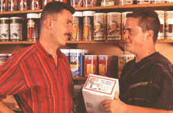
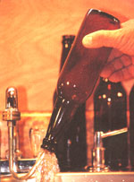
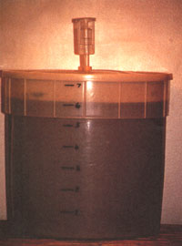
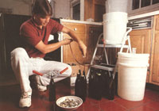
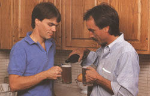

Horst Buch's Fast And Easy Beer
A guide to brewing beer at home, including the formula, stirring and clearing, materials and cost list.
By Horst Buchs
October/November 1992
Brew Your Own For Just $1.40 a Six Pack
Since my arrival in America as a young man from Germany, I have been appalled at what passes for beer here. I'd have to agree with the guy who said that the reason Americans drink in dark, dingy bars is because they're ashamed of their beer. The funny thing is that while American beer drinkers keep telling me how much they love hearty German beers, our country's beer keeps getting lighter and lighter. Considering what you pay for the privilege of drinking this glorified water, it's an outrage!
Now imported beer is more expensive and, unless you live near a city (which I don't), it isn't always easy to find. So I was left with two choices-I could give up beer or make my own. Because I like beer entirely too much to give it up, I decided to teach myself. At first, I was put off by all the books and magazine articles I read. Home brew seemed shrouded in mystique, involved too much rigmarole, and required a whole new language-what the heck is sparge, trub, or wort? Furthermore, who cares?
When I finally separated all the garbage from the useful information (no easy task), I discovered that you don't have to be a half-crazed chemist to make a good beer. I can proudly say that during the 10 years I have been making my own, I have made good beer and I have made better beer. Never have I made bad beer. Okay, maybe it's not authentic German beer, but my brew tastes terrific, it's cheap, and it's easy. What more could anyone ask?
The Secret Formula
As far as I'm concerned, there are two things to remember when brewing: consistency and cleanliness. Cleanliness helps ensure consistency. Consistency means that every time you pop a cap, you can rely on the same satisfaction. It's a simple philosophy but it works.
Be Consistent
To make good beer, you need five basic ingredients: water, sugar, malt, hops, and yeast. Being consistent means using the same amount of water, sugar, malt, hops, and yeast time after time. When it comes to water, I'm lucky. I'm not hooked up to city water, and I have a beautiful, clear well without the chlorine and other goodies that water departments serve their customers. If you aren't as lucky, try getting your water from a country cousin. The fact is: bad tasting water makes bad tasting beer. If you have to use city water, or you think your water might be contaminated with bacteria, boil it for 15 minutes to evaporate chlorine and to kill bacteria that would otherwise ruin your brew.
Down to the gritty stuff-sugar. The best sugar for making beer is corn sugar, which you can purchase from from beermaking suppliers. If you can't find it at a local shop, there are plenty of mail-order outfits (see "Mail-Order Resources" sidebar on page 93). Now you can use regular cane sugar, but the taste simply isn't as good. If you want nothing to do with sugar at all, go for an all-malt beer, which isn't quite as dry. But be warned: Unless you have a taste for full-bodied European beer, you would be wise to work your way up to all-malt beer gradually.
Malt is nothing more than barley that has been sprouted to change its starches into sugars suitable for fermenting. Luckily, you don't have to go through the trouble of sprouting your own grain. You can buy malt extract in a can. This dark, sticky syrup (similar to molasses) comes in pale, amber, and dark, and with or without hops. Personally, I like Munton and Fison amber malt extract, and because I like to choose my own hops, I get it without hops. Of note: Malt extract is used medically to treat debility (which certain ly explains why beer drinkers are such a robust and lively crew!)
Hops, the dried female flowers of the hop vine, add bitterness that offsets the malt's sweetness. Traditionally, hops are used as a vermifuge, which is also why beer drinkers hardly ever have worms. Because dried hops go stale fast and are messy to handle, I prefer the pelleted version. They vary in flavor and bitterness, depending on the variety and where it is grown. I use Hallertau hops because they are pungent without being excessively bitter.
Yeast causes this witch's brew of ingredients to ferment, and the kind of yeast you select will influence the flavor of your beer. Two kinds you want to avoid are baker's yeast and brewer's yeast. The former makes disgusting tasting beer, the latter is a nutritional supplement containing no live culture, so it won't ferment at all. Also, yeast has definite preferences when it comes to temperature. If it gets too cold, it goes dormant. If it gets too hot, it dies. Although I prefer Old English lager yeast, I use Munton and Fison's special warm-temperature yeast during the summer to keep my brew perking along.
Yeast causes this witch's brew of ingredients to ferment, and the kind of yeast you select will influence
the flavor of your beer.
Now I'd like to tell you it was sheer brilliance and insight that led to my rave beer reviews, but it wasn't. It was good old trial and error. But I am proud of my beer and I'm at the point where I brew the exact same way every time. I keep a record of the ingredients used, the date each batch was made, the room temperature under which it fermented, the date it was bottled, and other details. Because the slightest variation can have far-reaching consequences, I like to be able to track any changes that might occur in my brew.
If, after trying a batch or two, you decide to tailor my recipe to suit your own taste, keep detailed records so you can back-track if you're not happy with the results. Change only one thing at a time. If you try different hops, for example, don't change both the type and the amount in the same batch. Even something as simple as switching from one brand of malt to another can dramatically change the nature of your brew.
You Can't be Too Clean
Cleanliness involves meticulous washing of bottles and containers before and after each use. I rinse emptied bottles with warm water, then with a little household ammonia, then again with water before storing them away. I always store my bottles either upside down or in a closed box to keep out bugs and dust, and before bottling, I rinse the bottles in warm water with a generous splash of chlorine bleach (Clorox). I also scrub the fermenting bucket with warm water and bleach, and clean all the equipment that comes into contact with my beer. That way I'm sure that the only things in my beer are things I deliberately put there.
Stirring and Clearing Your Brew
Once I am ready to brew, I combine a packet of Old English lager yeast with a cup of water and then set it aside to soften. I warm a can of Munton and Fison amber malt extract in a sink of hot water, then stir the malt into at least four quarts of water in a large pot. I get the last of the sticky malt out of the can with several rinsings of hot water, which also goes into the pot. The more water boiled with the malt, the better, but because I brew six gallons at a time, a pot large enough to hold it all would be crazy expensive.
Next, I add 1 1/2 ounces of pelleted Hallertau hops, bring the mixture to a boil, and boil it for 10 minutes, taking care not to let it boil over. I pour it into the cleaned fermenter, stir in the corn sugar, and add cool water to make up a total of six gallons. The quicker this mixture cools, the betterin warm weather, setting the fermenter in a tub of ice water speeds things up a bit. When the mixture cools to 75° F, I stir in the softened yeast. I seal the fermenter with a tight lid, fitted with an airlock that allows the gasses generated by fermentation to escape. After a day or so in the basement, where the temperature is 65° to 75° F, the beer's surface foams up and the airlock begins ticking irregularly, like a demented hall clock. Fermentation is under way. Within seven to 10 days, things will pretty much calm down, and dead yeast will litter the fermenter floor. Then I syphon the beer off the bottom sludge into a large bottle or carboy (a rectangular container of about five to 15 gallons capacity that is made of glass, plastic, or metal). I always take great care not to introduce air by letting it splash as it passes.
Hops, the dried female flowers of the hop vine, add bitterness which offsets the malt's sweetness.
In another seven to 10 days, the brew has cleared but don't expect a mouth-watering sparkle yet. To add carbonation by renewing fermentation, I put one level teaspoon of corn sugar into each cleaned bottle (two teaspoons for champagne bottles). To avoid getting air into the beer during bottling, I use a filler attachment on the syphon. The filler has a nipple that, when pressed against the bottom of a bottle, fills the bottle without splashing. After capping each bottle, I shake it to mix in the sugar.
If you start getting over-anxious about putting your beer into bottles, a hydrometer will ensure that your bottles won't explode from excessive gas build-up. When you place the hydrometer in your brew and it floats up to the 1000 mark, your beer is safe to bottle. By taking readings when you first mix your ingre dients, and again when you bottle, you can determine your brew's alcohol content, which varies with the ingredients you use and the temperature under which they ferment. My beer averages 3.8 percent alcohol, which is plenty for me since I'm out for the taste, not the buzz. If you want to increase the alcohol content without affecting flavor, add a bit of dried malt extract. To customize the flavor as well, add a "kicker" can of Munton and Fison specialty malt extract. Any good beer supply outlet can help you with the details.
And While You're Waiting. . .
Okay, your beer is bottled. Now starts the hard part: waiting for it to age. Set the bottles aside, preferably in an area where the temperature stays between 60° and 70° F, for at least six weeks (be patient!) before pouring yourself a cool brew. Otherwise you'll take one taste and think you blew it. If you start getting restless while you're waiting, brew up another batch! Once you get a system going, you'll always have aged beer in the fridge and aging beer in the cellar. Caution: Ambition is good but stay in control. Federal law allows you to make 100 gallons per year for a one-adult household; 200 gallons for two or more adults. Some states require a permit. Arkansas,
Georgia, Oklahoma, and Utah outlaw home brewing altogether.
After you get a few batches of brew under your belt (quite literally), you may wish to branch out, experiment and learn the jargon. One possibility is joining a local home brew club where you can trade sage remarks and suggestions with fellow members. Some of these clubs include: Suds of the Pioneers, The Draught Board, and the Boston Brew-Ins. Or perhaps, like me, you'll be satisfied with one heck of a thirst-quenching beer. For me, over analyzing only kills the joy.
What You Need and What It'll Cost
For a six-gallon batch of beer, you'll need to purchase these ingredients each time:
Malt: one 3.3 pound can of Munton and Fison amber malt extract (not hopped), $9.65. Hops: 1 1/2 ounces pelleted Hallertau, $2.35. Sugar: eight cups corn sugar (6 1/2 cups for brewing, the rest to use for bottling), $1.80. (To make an all-malt, Euro-style beer, substitute an equal weight of malt extract for the sugar: 6 1/2 cups of corn sugar weighs about two pounds.) Yeast: one packet Old English lager yeast in winter. During the summer, you're better off using Munton and Fison warm-temperature yeast, 79 cents.
-Caps: 66 caps at 73 cents. The cheapest caps are overruns from various commercial beverage companies, meaning you could wind up topping your bottles with caps for orange soda or something worse.
Plain caps cost a few cents more and are well worth the extra expense. "Real Beer" caps will set you back 86 cents a batch.
Here's the equipment you'll have to invest in only once:
It may sound tempting to just go ahead and buy a beginning brewer's kit, but trust me, it's smarter to pick out each item individually. You'll end up with everything you need, and you won't waste money on stuff you don't. Here's the list of necessities, along with their prices taken from the latest catalogs:
-A large pot is needed for boiling ingredients. A four-gallon stainless steel stock pot at $48.95 is handy for other things besides making beer.
-Along-handled spoon helps mix ingredients as you go. A stainless steel spoon is nice, but a plastic paddle won't scratch your fermenter and costs just $4.99.
-A fermenter is a large bucket that holds beer while it ferments. Purists warn against using plastic, saying it scratches easily and must be replaced often. I've had the same plastic fermenter for 10 years and it's like new. With an indelible pen, I marked the fermenter at one-gallon intervals so I never have to measure when adding water. A seven-gallon fermenter (big enough to hold six gallons of bubbling brew) costs $11.25.
-A six-gallon glass carboy, which holds the beer while it clears, costs $24.95. If you can get a better deal on an empty fivegallon, bottled-water carboy, you'll need an additional one-gallon jug (you can use an apple or cranberry juice jug).
-Airlocks and stoppers will allow gasses to escape without letting nasty critters fly in. You'll need three airlocks and three rubber stoppers, one for the fermenter, one for the carboy, and one for the gallon jug. A stopper is simply a rubber cork with a hole drilled in the middle to hold the airlock. Stoppers come in various sizes for various prices. The hole in the fermenter generally takes a #2, the carboy takes a #6 1/2, and most one-gallon jugs take a #8 1/2. Cost for three airlocks with stoppers is $5.66.
-A syphon is used to prevent the awful-tasting sediment at the fermenter's bottom from mixing with the fresh beer that you transfer into the carboy. The syphon should have a stiff plastic tube at one end so it will stand in the carboy instead of snaking out and spraying beer all over your walls. A removable filler attachment at the other end helps you fill bottles after the beer has cleared. (hint: slip a cork onto the stiff end to hold the syphon up out of the bottom muck, and add another cork to the filler for easy gripping.) The total cost is $13.34.
-66 12-ounce or 33 24-ounce bottles are needed for six gallons of beer. If you drink two bottles at a clip, or regularly share your brew with a friend or spouse, go with the latter. Champagne bottles work perfectly, and can be had for free by crashing the right parties. Standard beer bottles come 24 to the case, so you'll need three cases costing a total of $35.37. You'll use the extra bottles to replace normal breakage (which at my place includes forgotten bottles left in the freezer for fast chilling which eventually broke).
If you don't mind bottles that aren't new and clean, buy returnable bottles from a bar or a beer distributor for the cost of the bottle deposit. (Never use nonreturnable bottles, which may explode under carbonation pressure). Expect bottles to be scratched or worn, but be sure to throw away chipped or cracked one. Recycled bottles come with tattered labels and icky insides, so clean them well. Soak the bottles in a tub or laundry sink, peel off the label, and rinse out the goop. If stuff still sticks inside a bottle, pour in a handful of peagravel, add a little amonia and some warm water. Shake well.
-A bottle washer ($10.35) flushes out dirty bottles. With the aid of an adaptor, the bottle washer screws into a standard kitchen faucet. Because I don't have much patience with fussy little parts, I replaced my kitchen faucet with a laundry faucet (about $30), which comes with a screwthread. It isn't pretty, but it works.
-A capper is necessary to tighten caps on the bottles. I've seen good cappers, cheap, at flea markets. A new one will cost you $29.50.
-A thermometer ($7.65) and a hydrometer ($6.95) are a must. The thermometer tells you when your mix is the right temperature to add yeast. The hydrometer lets you determine the alcohol content of your brew, and tells you when your beer safe to bottle. Hydrometers come with full instructions. Your capital investment (less optional laundry faucet) is about $200 plus shipping and sales tax.
Note: At the going rate of four bucks per six-pack, after you've made seven batches your equipment is paid for. From then on, each six-pack of real beer will cost you just $1.40.
EDITOR'S NOTE: This article was published in 1992. The costs above and the contact information below was accurate at that time.
Mail-Order Resources
Some mail-order suppliers are slow to ship, others are consistently out of the very thing you need most; still others characteristically short your order and keep the change. Here, however, are three that I have no problem with:
Beer & Wine Hobby, 180 New Boston Street (rear), Woburn, MA 01801, (800)523-5423.
E.C. Kraus, 9001 East 24 Highway, PO. Box 7850, Independence, MO 64053, (816)254-7448.
Main Street Marketplace, 103 N. Main Street, Waupaca, WI 54981, (715)2589160.
To learn more about homebrewing, check out:
"Basic Home Brewing," Terry Krautwurst, Mother Earth News, Jan/Feb 1988.
The following books are available from Storey Communications, Schoolhouse Road, Pownal, VT, (800)827-8673:
Better Beer & How to Brew It by M. R. Reese-a basic step-by-step guide with lots of helpful photos ($14.70 postpaid).
The Complete Handbook of Home Brewing by Dave Miller-technical information including how to evaluate your water supply ($12.70 postpaid).
Brewing the World's Great Beers by Dave Miller-an advanced, comprehensive guide to Old-World beers by the brewmaster at the St. Louis Brewing Company ($15.70 postpaid).
If you log onto the international computer network Internet, you can subscribe to Homebrew Digest, an electronic mail service periodical; from CompuServe, you can access Beer Forum and its three reference libraries (including Internet's Homebrew Digest).
Finally, the American Homebrewers Association, P.O. Box 287, Boulder, CO 80306 (303)447-0816 can put you in touch with a homebrew club in your area and (for $25 per year) will send you five issue of zymurgy containing mountains of information about books and suppliers as well as starting your own small-scale brewing business.
It may be tempting to buy a beginner's brewing kit, but it's smarter to pick out each item individually.
Around the World With 22 Beers
Listed below are the most current commercial beer styles on the market. By studying these terms and incorporating them into your vocabulary, you'll be well on your way to becoming an avant-garde beer connoisseur-or at least proficient enough to order a good brew.)
Alt means "old" in German and altbier is old style (that is, ale, as opposed to the newfangled lager) of dark German beer. It is hoppy, malty, and full-flavored. While Pinkus Mueller is one brand available here, it is lighter and less bitter than most. Kolsch, which is brewed in the region around Cologne (Koln), is the pale variety of alt, and basically unknown in America. It is lightly hopped, malty, and fruity, with some occasional acidic undertones.
German wheat beer comes in two distinct varieties: weiss, from northern Germany, and weizen, from the south. Weiss is a low-gravity brew (1.032), made with 25 percent wheat malt, and has a tart flavor produced by deliberately inoculating the wort with lactic acid-producing bacteria. Look for a brand called Kindl in this country. Weizen is made by major Bavarian breweries, including Spaten and Paulaner. Just to confuse things, they often label it "weiss," but it is completely different. It is a normal strength beer (1.045), made with 50 to 67 percent wheat malt and has a definite clove-like aroma and flavor produced by special strains of yeast that are used only for this type of beer.
Wit is a very pale Belgian wheat beer. Its distinction arises largely from the use of coriander instead of hops for aroma. Hoegaarden, the best-known brand, is widely available. Another Belgian specialty is the strong ale produced by several Trappist monasteries. These beers derive much of their flavor from the mixed cultures (several different strains) of yeast used in fermentation. The best known, Chimay, is made in three different strengths. 'then there are the famous Belgian fruit ales, peche (made with peaches), Kriek (cherries), and framboise (raspberries). Lindeman's and Liefman's are both available in the United States.
Cream ale is an American original, pale and dry like conventional American beer, but originally made by blending batches fermented with ale and lager yeast. For simplicity, it should be brewed with a clean, neutral-flavored ale yeast.
California common beer flourished in the late nineteenth century. Today, only a single commercial example survives, made by a famous San Francisco brewery. Recipes were apparently quite variable, but the modern version is similar to pale ale-amber in color, malty, and quite bitter. It is made using lager yeast, but is fermented at ale temperatures. This unique fermentation method was an American invention and gives the style its distinct place among the beers of the world.
Pilsner was not the original lager beer, but it is by far the most successful. First brewed in Bohemia in 1842, this pale, dry, hoppy style quickly spread across the beer-drinking world. In many countries, including the United States, the hop character has been toned down considerably. If you have never tried anything but American Pilsner, try a few of the lighter European brands (such as Carlsberg from Denmark), and some of the allmalt German and Czech brews. Pilsner Urquell, the original Pilsner, is a masterpiece (if you can find a fresh example), but a number of German "pils" are also worth seeking out, including Warsteiner and DAB.
Munich is where lager brewing began, and the pale (belles) and dark (dunkel) styles are similar in being lightly hopped, with a full malt body and flavor. Excellent examples of both are available in this country, brewed by Paulaner, Hacker-Pschorr, and Spaten, among others. On the other hand, genuine Dortmunder Export is hard to find. Most Dortmund beer on dealers' shelves is actual ty a kind of Pilsner. The Kronen brand, which is sometimes available, is basically a higher gravity, very full-flavored cousin of Munich helles.
Oktoberfest beer is an amber-colored, high-gravity Munich beer. It is also called Marzen or, in a lower-gravity manifestation, Vienna. You can get this special beer of the famous annual celebration in America, in season, without too much trouble.
Like Munich, bock beer comes in two varieties, the dark one associated with winter and early spring, the pale with late spring (it is sometimes called Maibock). Both are very strong, heavy, malty, and sweet. A number of brands are available. All the authentic ones come from Bavaria; in other countries, almost any dark beer may be called a bock. Doppelbock, an even stronger variation of dark bock, is easy to identify because all their names end in -ator (Celebrator, Kulminator, etc.).
Editor's Note: This excerpt was taken from Brewing the World's Great Beers.
 STEVE AGRICOLA |
 ALLAN DAMEROW |
 Allan Damerow |
|
 STEVE AGRICOLA |
 STEVE AGRICOLA |
 |